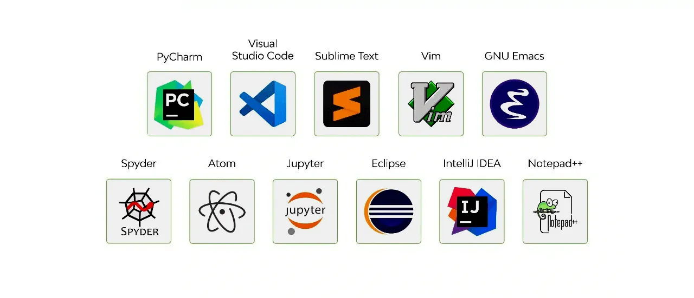
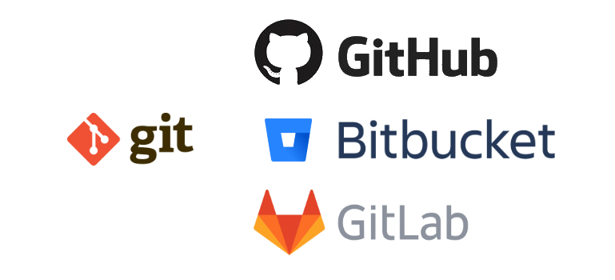
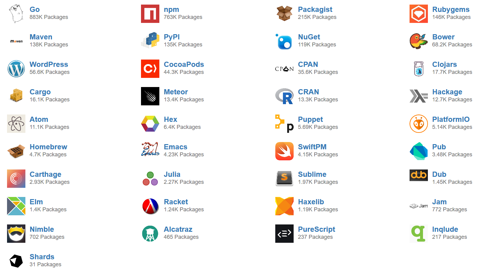
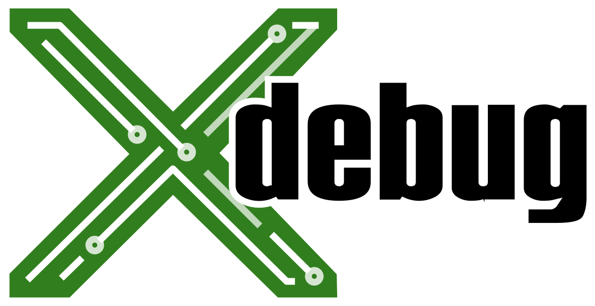
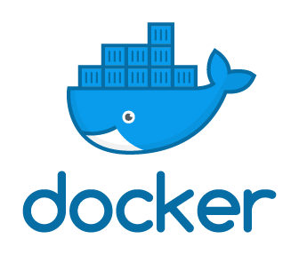

Herramientas y frameworks
Conocer la sintaxis y la filosofía de un lenguaje de programación es el primer paso fundamental, pero el desarrollo de software moderno es un proceso mucho más complejo que simplemente escribir código. Para construir aplicaciones robustas, mantenibles y seguras de manera eficiente, los desarrolladores se apoyan en un vasto ecosistema de herramientas y frameworks.
Las herramientas son los programas que nos asisten en todo el ciclo de vida del desarrollo: desde el editor de código o Entorno de Desarrollo Integrado (IDE) donde escribimos, pasando por el software de control de versiones como Git que nos permite colaborar y rastrear cambios, hasta los gestores de paquetes como Composer (PHP) o npm (Node.js) que automatizan la inclusión de librerías externas.
Por otro lado, un framework es mucho más que una simple herramienta o librería. Es un esqueleto, un andamiaje y un conjunto de reglas que nos proporcionan una estructura sólida sobre la que construir nuestra aplicación. Un framework nos ofrece soluciones a problemas comunes (como la gestión de rutas, el acceso a bases de datos o la seguridad) y nos guía para que sigamos las mejores prácticas de la industria, evitando que tengamos que "reinventar la rueda" en cada nuevo proyecto.
En esta sección, exploraremos las herramientas esenciales que todo desarrollador backend debe conocer y profundizaremos en el concepto de framework, entendiendo por qué son una pieza indispensable en la construcción de cualquier aplicación web profesional.
Herramientas Esenciales del Desarrollador
El punto de partida para cualquier desarrollador es su entorno de trabajo digital, el lugar donde el código cobra vida. Este espacio puede ir desde un editor de código ligero y rápido, como Sublime Text, que ofrece funcionalidades esenciales como el resaltado de sintaxis, hasta un completo Entorno de Desarrollo Integrado (IDE). Un IDE, como PhpStorm para PHP o PyCharm para Python, es una suite de software mucho más robusta que integra en una sola ventana un editor avanzado, un depurador, un cliente de base de datos y un sinfín de herramientas de análisis y refactorización específicas para un lenguaje. En un popular punto intermedio se encuentra Visual Studio Code (VS Code), un editor extensible que puede ser moldeado a través de extensiones para funcionar como un potente IDE a medida.

Una vez que el código comienza a tomar forma en el editor, surge inmediatamente la necesidad de gestionarlo y protegerlo. Aquí entra en juego el control de versiones, una práctica no negociable en el desarrollo profesional. La herramienta estándar para esta tarea es Git, un sistema distribuido que registra cada cambio como una "instantánea" o commit, permitiendo viajar en el tiempo en el historial del proyecto. Git posibilita el trabajo en ramas (branches), líneas de desarrollo paralelas donde se pueden crear nuevas funcionalidades de forma segura. Para la colaboración, los repositorios de Git se alojan en plataformas en la nube como GitHub o GitLab, que actúan como un punto central y añaden herramientas para la revisión de código y la gestión de proyectos.

El desarrollo moderno, además, no es un acto solitario; se construye sobre el trabajo de miles de desarrolladores a través de librerías de código abierto. Para gestionar estas dependencias externas, cada ecosistema de lenguaje cuenta con un gestor de paquetes. Herramientas como Composer en PHP, npm en Node.js o pip en Python automatizan la instalación y actualización de estas librerías, registrando las versiones exactas requeridas por el proyecto en un fichero de manifiesto. Esto asegura que el entorno de desarrollo sea reproducible y consistente para todo el equipo.

Inevitablemente, al combinar nuestro propio código con el de múltiples dependencias, surgen errores. Mientras que el método más básico para encontrar un fallo es imprimir el valor de las variables por pantalla, el enfoque profesional utiliza un depurador (debugger). Un depurador, como Xdebug para PHP o los integrados en los IDEs, es una herramienta que nos permite pausar la ejecución del código en puntos específicos (llamados breakpoints), inspeccionar el estado completo de la aplicación en ese instante y avanzar por el código línea a línea. Dominar el uso de un depurador es una de las habilidades más cruciales para diagnosticar y resolver problemas de manera rápida y precisa.

Frameworks: Construyendo Sobre Cimientos Sólidos
Si las herramientas son los instrumentos que utilizamos, un framework es el plano y los cimientos de la casa que vamos a construir. Es una de las piezas más importantes del ecosistema del desarrollador, ya que proporciona una estructura y una arquitectura predefinida para nuestra aplicación. La diferencia fundamental con una simple librería es el principio de Inversión de Control (IoC): en lugar de que nuestro código llame a una librería para usar una de sus funciones, es el framework el que llama a nuestro código en los momentos adecuados. Nosotros rellenamos los huecos que el framework nos deja, implementando la lógica de negocio específica de nuestro proyecto. Su objetivo es simple pero poderoso: evitar que los desarrolladores "reinventen la rueda", ofreciendo soluciones robustas y probadas para los problemas más comunes del desarrollo web.
Aunque cada framework tiene su propia filosofía, la gran mayoría de los frameworks web modernos se basan en un conjunto de conceptos y patrones comunes. El más importante es la arquitectura MVC (Modelo-Vista-Controlador). Este patrón de diseño separa la aplicación en tres componentes interconectados. El Modelo representa los datos y la lógica de negocio; es la capa que interactúa con la base de datos, a menudo a través de un ORM (Object-Relational Mapper), una técnica que nos permite trabajar con las tablas de la base de datos como si fueran objetos de nuestro lenguaje de programación. La Vista es la capa de presentación, la plantilla HTML que se mostrará al usuario, la cual debe contener la menor lógica posible. Finalmente, el Controlador actúa como el intermediario: recibe la petición del usuario, se comunica con el Modelo para obtener o modificar los datos y, finalmente, le pasa estos datos a la Vista para que los renderice.
Para gestionar qué controlador debe responder a cada petición, los frameworks utilizan un sistema de enrutamiento (routing). Este componente mapea cada URL de la aplicación (por ejemplo, /usuarios/perfil/123) a un método específico de un controlador, actuando como el primer punto de entrada de la lógica de la aplicación. Asimismo, para renderizar las Vistas, utilizan un motor de plantillas. Esta herramienta nos permite escribir HTML con una sintaxis simplificada para mostrar variables, crear bucles o aplicar condicionales, que posteriormente el motor compila a HTML puro antes de enviarlo al navegador.
El uso de un framework no es opcional en el desarrollo profesional. Aporta beneficios inmensos en productividad, al proporcionar componentes listos para usar; en seguridad, ya que suelen incluir protecciones contra vulnerabilidades web comunes como CSRF o inyección SQL; y sobre todo en mantenibilidad, porque al imponer una estructura estándar, cualquier miembro del equipo sabe dónde encontrar y cómo organizar el código, facilitando enormemente la colaboración y la evolución del proyecto a largo plazo.
Aquí tienes una lista de los frameworks más representativos para cada uno de los lenguajes de programación que hemos visto:
**PHP *
- Laravel: El framework más popular actualmente. Conocido por su sintaxis elegante, su completo ecosistema (ORM Eloquent, motor de plantillas Blade) y su enfoque en la felicidad del desarrollador.
- Symfony: Un conjunto de componentes PHP reutilizables y un framework de alto rendimiento. Es extremadamente robusto y flexible, sirviendo de base para muchos otros proyectos, incluyendo Laravel.
- CodeIgniter: Un framework muy ligero y rápido, conocido por su simplicidad y su excelente documentación.
Python
- Django: El framework "full-stack" por excelencia. Proporciona una solución completa e integrada para todo, desde el ORM hasta el panel de administración.
- Flask: Un microframework minimalista y extensible. Ofrece el núcleo esencial y deja total libertad al desarrollador para elegir el resto de las herramientas.
- FastAPI: Un framework moderno de alto rendimiento para construir APIs, con validación de datos automática y generación de documentación interactiva.
JavaScript (Node.js)
- Express.js: El estándar de facto. Es un framework minimalista y flexible que sirve de base para innumerables herramientas y otros frameworks del ecosistema Node.js.
- NestJS: Un framework progresivo para construir aplicaciones eficientes y escalables. Utiliza TypeScript y está fuertemente inspirado en la arquitectura de Angular.
- AdonisJS: Un framework MVC completo, similar en filosofía y estructura a Laravel, que busca ofrecer una experiencia de desarrollo "todo incluido".
Java
- Spring Boot: La forma más popular y moderna de construir aplicaciones en Java. Simplifica radicalmente la configuración y el despliegue de aplicaciones basadas en el Spring Framework, incluyendo un servidor web embebido.
- Jakarta EE (anteriormente Java EE): Un conjunto de especificaciones que definen una plataforma estándar para el desarrollo de aplicaciones empresariales. Frameworks como WildFly o GlassFish implementan estas especificaciones.
Ruby
- Ruby on Rails: El framework que lo cambió todo. Famoso por su principio de "Convención sobre Configuración", que permite un desarrollo extremadamente rápido.
C# (.NET)
- ASP.NET Core: El framework de código abierto y multiplataforma de Microsoft para construir aplicaciones web de alto rendimiento. Conocido por su velocidad y su robustez.
Despliegue Moderno: Contenedores y Orquestación
Una vez que hemos escrito, depurado y probado nuestra aplicación utilizando las herramientas y frameworks adecuados, nos enfrentamos al último paso crucial del ciclo de vida del software: el despliegue. El despliegue es el proceso de llevar nuestra aplicación desde el ordenador del desarrollador a un servidor de producción donde los usuarios reales puedan acceder a ella. Históricamente, este paso ha sido una de las mayores fuentes de problemas y errores.
El desafío más clásico del despliegue se resume en la famosa frase: "¡En mi máquina funciona!". Un desarrollador construye la aplicación en su entorno local, con una versión específica del lenguaje, unas librerías concretas y una configuración de sistema operativo determinada. Sin embargo, el servidor de producción casi nunca es idéntico. Estas pequeñas diferencias ambientales son suficientes para que una aplicación que funcionaba perfectamente en desarrollo falle de formas inesperadas en producción. La contenerización nace como la solución definitiva a este problema de inconsistencia de entornos.
Docker: Estandarizando el Entorno
Un contenedor es un paquete de software ligero, autónomo y ejecutable que incluye todo lo necesario para que una aplicación se ejecute: el código, el tiempo de ejecución (runtime), las herramientas del sistema y las librerías. La plataforma estándar de facto para crear, distribuir y ejecutar estos contenedores es Docker.

El proceso consiste en definir en un fichero de texto, llamado Dockerfile, todos los pasos para construir el entorno de nuestra aplicación. Docker lee este fichero y genera una imagen, que es una plantilla inmutable de nuestra aplicación. A partir de esa imagen, podemos crear tantos contenedores como queramos. Al "dockerizar" una aplicación, se garantiza que esta se comportará exactamente de la misma manera en cualquier lugar donde se ejecute Docker. Se elimina por completo la variabilidad del entorno, resolviendo el problema de "en mi máquina funciona" para siempre.
Kubernetes: Gestionando la Complejidad a Escala
Docker nos da la capacidad de crear los "ladrillos" (los contenedores). Pero, ¿qué ocurre cuando nuestra aplicación no es un solo contenedor, sino un sistema complejo compuesto por docenas o cientos de ellos que deben comunicarse entre sí y ejecutarse en múltiples servidores? Gestionar esto manualmente es inviable. Aquí es donde entra en juego la orquestación.
Kubernetes (K8s) es la plataforma de código abierto líder para la orquestación de contenedores. Es, en esencia, el "cerebro" que gestiona toda nuestra flota de contenedores a escala. Sus responsabilidades principales son:
- Despliegue y Escalado: Define cuántas réplicas de cada contenedor deben estar ejecutándose y las mantiene. Puede escalar automáticamente el número de réplicas hacia arriba o hacia abajo en función de la carga de trabajo.
- Autoreparación (Self-Healing): Monitoriza constantemente la salud de los contenedores. Si uno de ellos falla o deja de responder, Kubernetes lo reinicia o lo reemplaza automáticamente sin intervención manual.
- Balanceo de Carga y Descubrimiento de Servicios: Expone un conjunto de contenedores bajo un único punto de acceso de red y distribuye el tráfico entre ellos. También permite que los contenedores se encuentren entre sí de forma fiable, incluso si sus direcciones IP cambian.
En la arquitectura moderna de microservicios y despliegue en la nube, la combinación de Docker para empaquetar y Kubernetes para gestionar se ha convertido en el estándar de la industria.